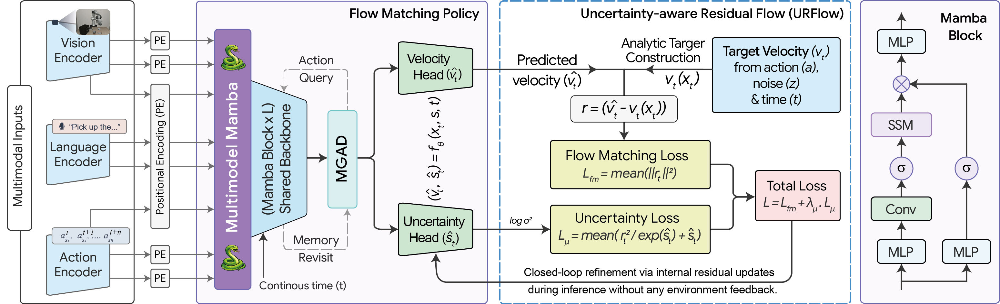
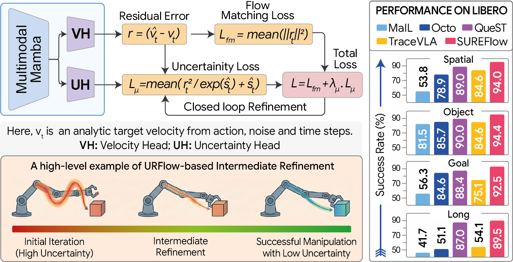

SUREFlow#
SUBMITTED · IROS 2026 co-author with Md Tanvir Islam et al. · KNU
SUREFlow
State-space Uncertainty-aware REsidual Flow Matching for robust robot manipulation. A Mamba-backbone VLA policy that predicts both action velocities and input-dependent uncertainty — selectively refining unreliable action dimensions during inference without environment feedback.

TL;DR#
SUREFlow is a generative robot-manipulation policy that closes the gap between diffusion/flow action models and reliable execution during long rollouts.
92.6 % average success rate on LIBERO — outperforms the Mamba-based MaIL baseline by +34.3 %.
~50 % success rate on LIBERO-PRO with only 179 M parameters — comparable to 3–7 B VLAs.
Built on a Mamba backbone (state-space sequence modeling, linear-time inference).
Adds input-dependent uncertainty + residual refinement without environment feedback.
What Problem It Solves#
Generative VLA policies (diffusion / flow matching) advanced robot manipulation, but they often wobble under noise, partial observability, and stochastic initial conditions. Tiny velocity errors accumulate over long rollouts, eroding success rates.
Existing diffusion- and flow-based policies typically assume homoscedastic residuals — they ignore that some action dimensions are inherently harder to predict than others. The result: brittle one-shot predictions, error accumulation, and unreliable extended-horizon control.
How It Works#

SUREFlow combines three ideas into one lightweight policy:
Conditional flow matching — learns a velocity field that transports Gaussian noise toward expert action distributions, conditioned on multi-view RGB observations, robot proprioception, and language task embeddings.
Uncertainty-aware Residual Flow (URFlow) — an auxiliary head predicts input-dependent variance over the velocity field. During inference, this signal selectively re-refines only the unreliable action dimensions through internal residual updates — no environment feedback or planner required.
Memory-Guided Action Decoder (MGAD) — re-attends learnable action queries to multimodal memory representations, improving temporal conditioning and structured action generation.
All three modules live on top of a single Mamba state-space backbone — linear-time, scalable, and far lighter than transformer-based 3–7 B VLAs.
Results#
Why It’s Interesting#
No environment feedback needed at inference. Refinement happens entirely inside the policy using its own uncertainty signal — practical for real robots where feedback loops are expensive.
State-space backbone instead of giant transformers. SUREFlow gets foundation-model-level performance at a tiny fraction of the parameter count.
Probabilistic regularization preserves the flow-matching objective. Adds robustness without breaking the underlying generative formulation.
My Contribution#
Co-author with Md Tanvir Islam, Sangmoon Lee, and Sangtae Ahn at Kyungpook National University. I contributed to the flow-matching policy architecture, the Mamba-backbone integration, evaluation pipeline on LIBERO / LIBERO-PRO, and the ablations that quantify the impact of URFlow and MGAD.